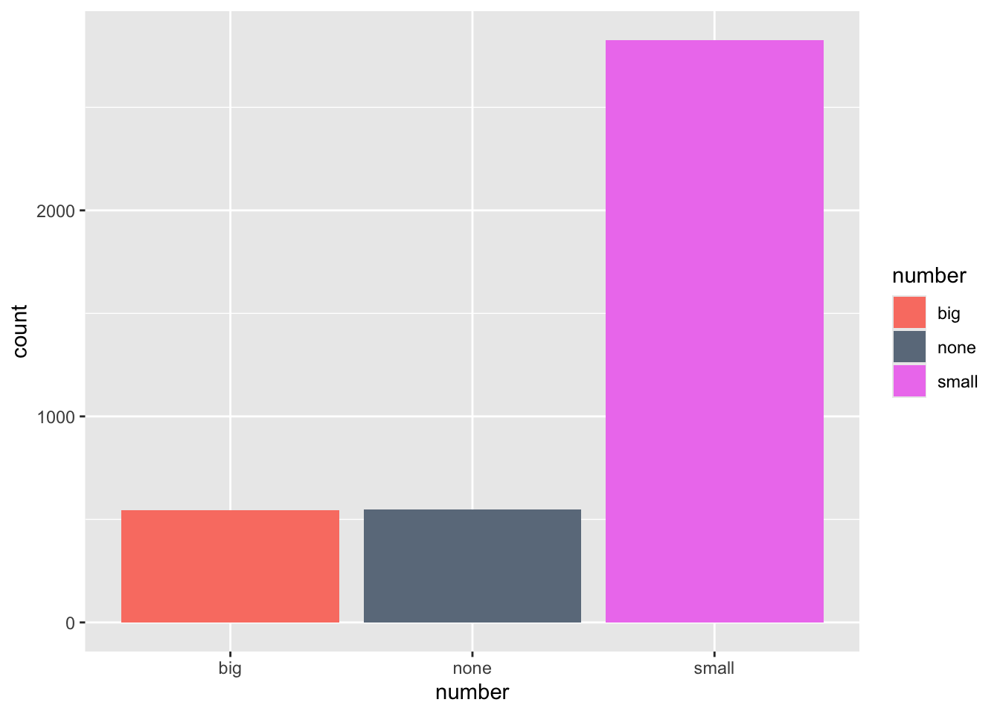
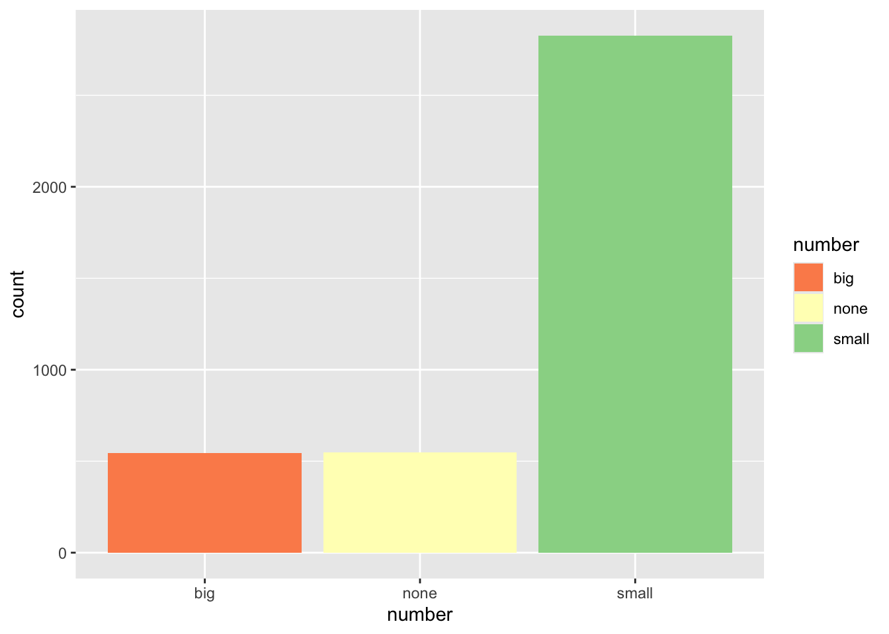
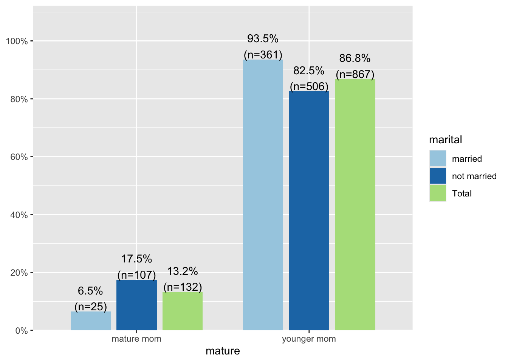
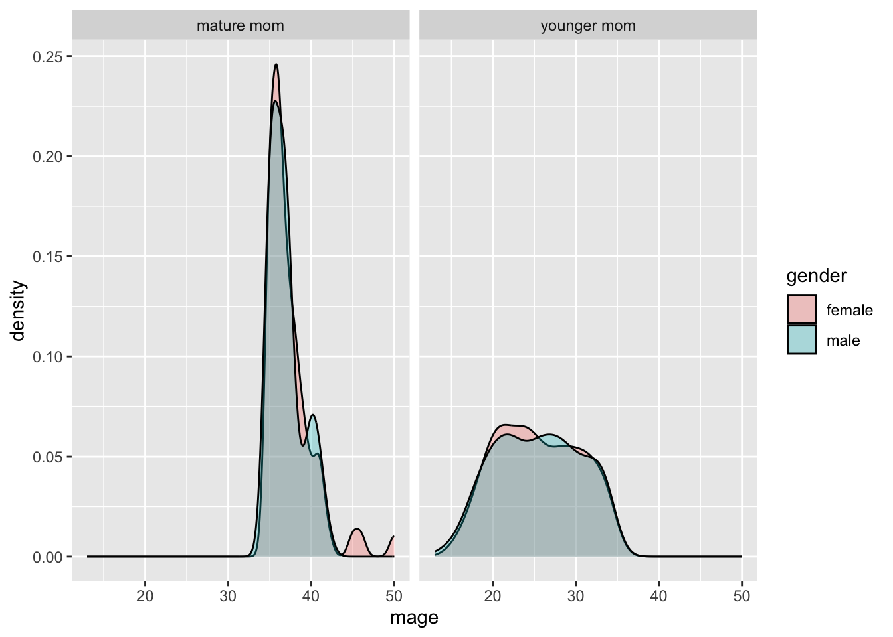
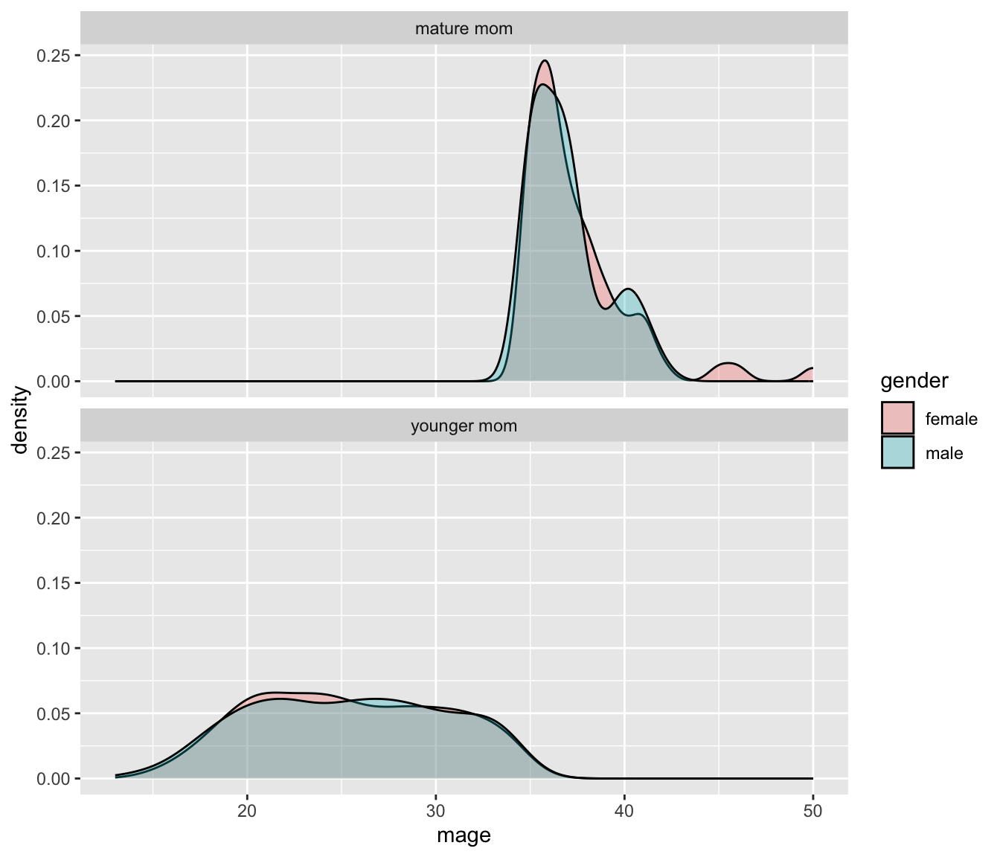
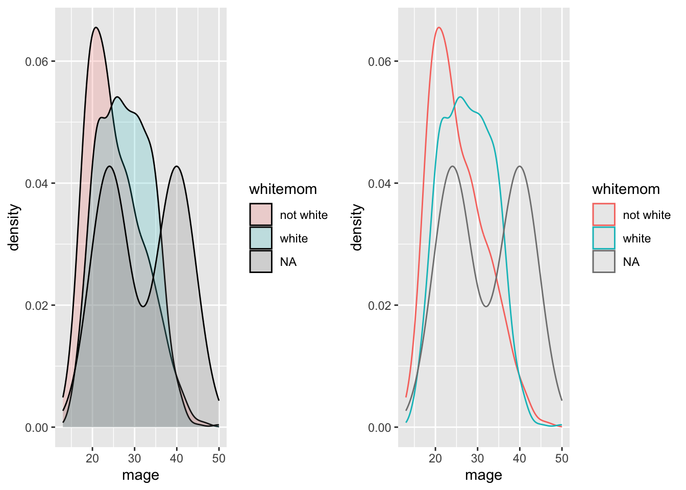

library(ggplot2); library(dplyr)
knitr::opts_chunk$set(warning=FALSE, message=FALSE)
email <- read.table("data/email.txt", header=TRUE, sep="\t")
NCbirths <- read.csv("data/NCbirths.csv", header=TRUE)9 Graphing Enhancements
Introduction (Video)
The first lesson on graphing focused on creating the correct graphics for the data types. This lesson expands on those tools and demonstrates how to customize some features and add enhancements to clarify or to add information to a plot.
Learning Objectives
After completing this lesson students will be able to
- Change the color of plots
- Create a grid/panel of plots.
- Create several multivariable graphics
- Know of a few new packages that contain functions that enhance plots
Too much to memorize!
There is NO need to remember all of these adjustments when there are incredibly handy reference guides available. The resource section of the Week 4 overview has links to some of my favorite sites.
Preparation
Prior to this lesson students should
- Install the following packages:
gridExtra,RColorBrewerandsjPlotpackages. - Download the notes file for this lesson
- Update the paths to read in the data and ensure the first code chunk of your notes work.
9.1 Themes (Video)
The standard theme has a gray background, white grid lines etc. Themes can be changed by adding theme_X() where X has several options
ggplot(email, aes(x=line_breaks, y=num_char)) + geom_point() + theme_bw()
ggplot(email, aes(x=line_breaks, y=num_char)) + geom_point() + theme_void()ggplot(email, aes(x=line_breaks, y=num_char)) + geom_point() + theme_dark()See more about themes here: http://www.sthda.com/english/wiki/ggplot2-themes-and-background-colors-the-3-elements
9.2 Legends (Video)
9.2.1 Titles
Add the name= argument to whatever layer you added that created the legend. Here I specified a fill, and it was a discrete variable. So I use the scale_fill_discrete() layer.
ggplot(email, aes(y=num_char, x=number, fill=number)) + geom_boxplot() +
scale_fill_discrete(name="Size of number")
Here I color the box outlines so the layer is scale_color_discrete().
ggplot(email, aes(y=num_char, x=number, col=number)) + geom_boxplot() +
scale_color_discrete(name="Size of number")
9.2.2 Removing the legend
In this case the legend show the same information. That’s redundant and takes up space, so let’s remove it entirely by adding guide="none" to the scale_ layer.
ggplot(email, aes(y=num_char, x=number, col=number)) + geom_boxplot() +
scale_color_discrete(guide="none")
9.3 Titles (Video)
A good plot needs to stand alone and convey as much information as possible.
ggtitle()adds an overall plot titleylab()andxlab()adjust the axis labels.
ggplot(email, aes(y=num_char, x=number, col=number)) + geom_boxplot() +
scale_color_discrete(guide="none") +
ggtitle("Distribution of the number of characters in an email based on the size of the number in the email") +
ylab("Number of characters") + xlab("Size of number in email")
9.4 Removing NA categories (Video)
This happens when there is no data is present for one or more levels. One way to get around this is to use select to only choose variables that we are going to use in the plot directly, delete all rows with any missing values using na.omit(), then pipe ggplot directly in after deleting all rows with missing data.
NCbirths %>% select(mage, whitemom, marital, habit) %>% na.omit() %>%
ggplot(aes(x=mage, fill=whitemom)) +
geom_density(alpha=.2) + facet_grid(marital~habit)
Warning:
na.omit()can be dangerous to use. It will drop EVERY row with ANY value missing. We are using it safely here because we are only selecting the variables that we will use in the plot.
9.5 Changing colors (Video)
9.5.1 Manual
ggplot(email, aes(x=number, fill=number)) + geom_bar() +
scale_fill_manual(values=c("red", "green", "blue"))
There’s some spectacularly named colors as well, here is the full list of names.
ggplot(email, aes(x=number, fill=number)) + geom_bar() +
scale_fill_manual(values=c("salmon", "slategray4", "violet"))
And you can use hex colors
ggplot(email, aes(x=number, fill=number)) + geom_bar() +
scale_fill_manual(values=c("#47dbff", "#b3b3cc", "#ff531a"))
9.5.2 Using a color palette (recommended)
library(RColorBrewer)
ggplot(email, aes(x=number, fill=number)) + geom_bar() +
scale_fill_brewer(palette="Spectral")
Review the links in the additional resources section of the Week 4 overview on how to choose colors. With great power comes great responsibility. Colors can just as easily detract from a plot as they can enhance it.
9.6 Barchart enhancements (Video)
9.6.1 Numbers to the top of bars.
The biggest addition to a barchart is the numbers on top of the bars.
ggplot(email, aes(x=number)) + theme_bw() +
geom_bar(aes(y = ..count..)) + ggtitle("Frequency of emails by size of number") +
geom_text(aes(y=..count.. + 50, label=..count..), stat='count', size = 5)
- Play with the
+50on the y axis to move the numbers up/down the bars. - Play with the
sizemodifier to find something readable.
9.6.2 Plotting Proportions
Often you don’t want to compare counts but percents. To accomplish this in ggplot is doable, but involves pre-calculating the percentages first and then plotting the summary numbers. This is a great place to introduce a different package: sjPlot.
ggplot2 is pretty great for easy out-of-the-box plots that don’t look half bad. Well for something a bit better when it comes to labeled barcharts let’s turn to the sjPlot package. Note this package uses ggplot graphics, but does not follow the syntax. So you’ll need to reference the vignette often to to learn more of what this package can do and what syntax it uses.
To plot the frequency distribution of a single categorical variable we use the “plot freq” function plot_frq
library(sjPlot)
plot_frq(email$number)To plot the results of a contingency table we can use the plot_xtab function.
plot_xtab(NCbirths$mature, NCbirths$marital)
As before, you MUST do a common sense check on the proportions that are shown, which also means knowing what the default settings for a function are. The defaults for plot_xtab show the proportion of the fill variable, within the variable that’s on the x. In context of the plot above, 17.5% of women who are not married are mature moms. 86.8% of all moms are younger moms.
You can see the available adjustments using function arguments by reviewing the vignette for that function. Here I will turn off the total column by adding show.total=FALSE and turn it into row percents by adding margin='row'.
plot_xtab(NCbirths$mature, NCbirths$marital, margin='row', show.total = FALSE)
Now 81.1% of mature moms are not married, and 41.6% of younger moms are married. Always make sure your %’s being displayed match your interpretation.
9.7 Multivariate plotting (Video)
So far we’ve only looked at how to plot 2 variables on the same plot. Let’s up our game some.
9.7.1 Boxplots with three variables.
In the first plotting lesson, we saw that for boxplots the continuous variable goes on the y, categorical on the x. Well you can also fill (or color) the boxes by a third variable if you want an additional comparison within the categories on the x axis.
ggplot(NCbirths, aes(y=weeks, x=mature, fill=habit)) +
geom_boxplot()This lets us compare the average gestation period for smokers vs non smokers, and mature vs younger moms. Displaying the boxes this way allows for easy comparison of weeks between smokers & non smokers, within maturity status. If we flip the x axis and fill,
ggplot(NCbirths, aes(y=weeks, x=habit, fill=mature)) +
geom_boxplot()
Now the emphasis is on comparing weeks between mature & younger moms, within each smoking status.
This way of grouping levels of one aspect within categories of another aspect is extended and enhanced using faceting or paneling.
9.8 Faceting / paneling
ggplot introduces yet another term called faceting. The definition is a particular aspect or feature of something, or one side of something many-sided, especially of a cut gem. Basically instead of plotting the grouped graphics on the same plotting area, we let each group have it’s own plot, or facet.
We add a facet_wrap() and specify that we want to panel on the color group. Note the twiddle in front of color. (Not here we’re switching to the NCbirths data set.)
ggplot(NCbirths, aes(x=mage, fill=gender)) + geom_density(alpha=.3) + facet_wrap(~mature)
The grid placement can be semi-controlled by using the ncol argument in the facet_wrap() statement.
ggplot(NCbirths, aes(x=mage, fill=gender)) + geom_density(alpha=.3) + facet_wrap(~mature, ncol=1)
It is important to compare distributions across groups on the same scale, and our eyes can compare items vertically better than horizontally.
9.9 Multiple plots per window
This method works only for plots created with ggplot. Here we use the grid.arrange function in the gridExtra package.
- assign the output of a ggplot object to an object (here it’s
plot1andplot2). - Use
grid.arrange()to arrange them either side by side or top and bottom.
library(gridExtra)
plot1 <- ggplot(NCbirths, aes(x=mage, fill=whitemom)) + geom_density(alpha=.2)
plot2 <- ggplot(NCbirths, aes(x=mage, col=whitemom)) + geom_density()
grid.arrange(plot1,plot2, ncol=2)
9.10 Paneling on two variables
Who says we’re stuck with only faceting on one variable? A variant on facet_wrap is facet_grid. Here we can specify multiple variables to panel on.
ggplot(NCbirths, aes(x=mage, fill=whitemom)) + geom_density(alpha=.2) + facet_grid(marital~habit)